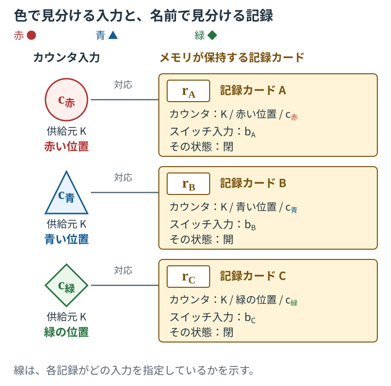
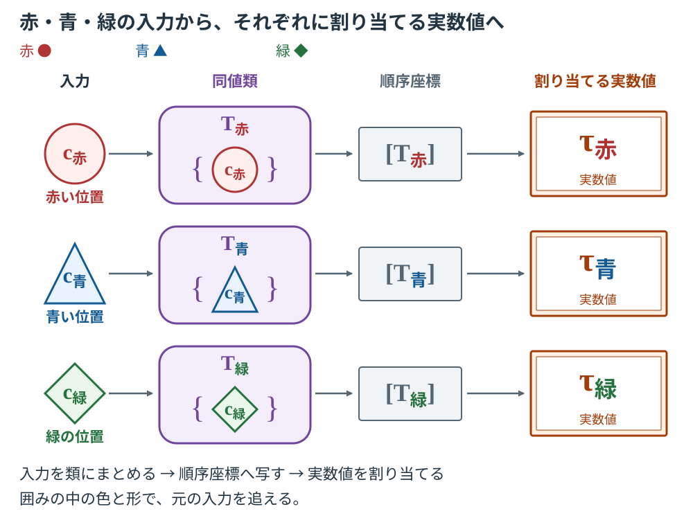
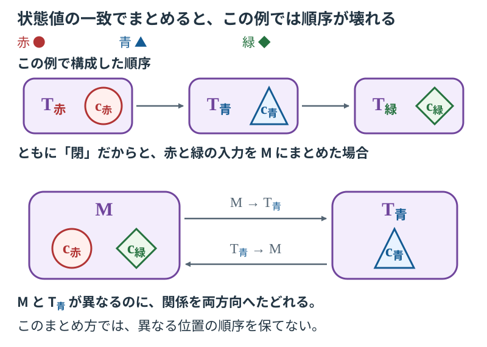

LCTR / 時間を構成する
時間の作り方カウンタ、記録、スイッチ、情報の結合から、時間と対象の変化を組み立てる
LCTR（時間参照の局所比較理論／Local-comparison theory of time reference）は、物理的な計数、記録、対象状態の差異、情報の結合から時間を構成する。このページでは、一つの装置が保持する三件の記録を使い、時間の同一性、順序、数値表示、対象の状態表示を順に作る。最後には、スイッチの状態を時間変数の関数 として書けるようになる。
1. 部品が何を供給するかを決める
カウンタ、メモリ、スイッチ、結合回路を一つずつ備えた装置を考える。
四つの役割を表す記号 、、、 は、それぞれ Clock（時計）、Detector（検出器）、Body（物体）、Observer（観測者）の頭文字に由来する。
| LCTRの役割 | この例の部品 | この部品に担当させる仕事 |
|---|---|---|
| ：時計側 | カウンタ | 内部の計数位置を区別し、更新に従う位置の並びを供給する |
| ：記録側 | メモリ | カウンタ入力とスイッチの状態入力の対応を保持し、読み出せるようにする |
| ：対象状態側 | スイッチ | 開・閉という状態の違いを供給する |
| ：観測者側情報結合 | 結合回路 | 接続された入力を識別し、どのカウンタ入力・記録・状態入力が対応するかを束ねる |
記録側の は、検出・記録・再提示を統合する役割であり、LCTRはその代表語として Detector を用いる。
ここからは、表の を担当するカウンタの中を詳しく見る。そのカウンタの各計数位置に、見分けるための札を付ける。この説明で取り上げる札は、赤い丸●、青い三角▲、緑のひし形◆である。それぞれの札は色・形・名前を持ち、別の計数位置を指す。
この札を使って、四つの役割が一件の記録にどう関わるかを見てみる。ここでは、赤印のカウンタ入力と「閉」というスイッチ入力を対応させ、その対応をメモリへ記録する。
- 時計側 のカウンタは、赤い丸●で示した位置に由来する入力を供給する。
- 対象状態側 のスイッチは、「閉」という状態の入力を供給する。
- 情報結合を担う の結合回路は、指定したカウンタ入力・スイッチ入力と、それらを保持する記録との対応を束ねる。
- 記録側 のメモリは、この対応を保持する。この一件の記録に「カードA」という名前を付ける。
したがって、カードAのカウンタ欄を読むと 側の赤印の入力が分かり、スイッチ欄を読むと 側の「閉」の入力が分かる。カードA自体が 側の記録であり、それぞれの入力とこの記録を結び付けるのが の働きである。青い三角▲と緑のひし形◆も、同じ のカウンタ内にある別々の計数位置の札として使う。次節では、それぞれに由来する入力を別のカードへ対応させる。
このカウンタには、「赤印の位置を青印の位置へ、青印の位置を緑印の位置へ対応させる」という更新規則を与える。図の矢印をたどるように、この対応をつなぐと赤印から緑印へのつながりも得られる。色の名前は位置の識別を担当し、更新規則は位置どうしの関係を担当する。ここで比較に使うのは、この規則によるつながりである。
カウンタの供給元全体には、この説明で取り上げる位置以外の計数位置もある。それらにも別々の札を付ける。図では、赤・青・緑に由来する記録だけを取り出す。更新規則が供給する計数位置の関係と、後で構成する時間表示・秒への対応を、それぞれの段階で指定する。
本文の入力型との対応。 このカウンタは、本文の自然数による計数位置を、それぞれ別の札で表示したものである。赤印は指定した起点、青印はその更新先、緑印は青印の更新先を表す。ほかの位置についても、本文の計数の後続関係に従って更新先を指定する。この札への対応は位置を一対一に識別するので、計数位置の区別と比較関係を保つ。
以下の手順では、装置が読み出した情報から元の入力を特定する。そのうえで、構成規則に従って同じものとして扱う入力をまとめる。スイッチ側の入力も同様にまとめ、記録に保持された対応を使って、両側で得たまとまりを対応させる。LCTRは、この材料から比較可能な時間構造を構成する。
四つの記号は役割を表す。その役割を実現する物理的なものを「担体」という。この例ではカウンタやメモリなどの部品が担体に当たる。同じ担体が複数の役割を実現する構成も検討できる。必要な物体数は、各役割の実現方法と、一個の物体として数える範囲を指定して決める。
2. 三件の記録を作る
時計側 の入力を特定するため、カウンタの本体、その内部更新規則、出発位置である赤印の位置、記録側 への接続を指定する。こうして、どの構成から入力を得るかを定める。LCTR本文は、計数位置と更新を供給する物理的な供給元を「ソース」と呼ぶ。この例では、その供給元に という名前を付ける。
別のカウンタにも赤い札を付けられる。どちらの入力かを特定するため、記録には「供給元Kの赤印」という由来を残す。札と供給元の組によって、このカウンタの該当位置を読み出せる。
この のカウンタの赤・青・緑の位置に由来する入力を、それぞれ と書く。添字には、各入力の由来となる位置の色名を使う。図では、各入力の色と形もそのまま保つ。
記録側 のメモリでは、先ほどのカードAに加え、カードB・カードC という識別札も使う。各カードは一件の記録を指す。まず、 を担当する結合回路がカードAの保存先を指定する。カウンタの読出し部は、そのカードのカウンタ欄へ「供給元Kの赤印」を渡す。 を担当するスイッチの読出し部は、同じカードの状態欄へ、対象スイッチの指定・入力の識別名・「閉」という状態を渡す。結合回路は、これらをカードAに保持する対応として束ねる。
カードAに渡すスイッチ入力には という識別名を付ける。メモリはカードの内容と識別札Aを保持する。この記録個体を と書く。読出し規則は、カードAから元の入力名と内容を返す。
カードBには青印の入力と「開」のスイッチ入力を、カードCには緑印の入力と「閉」のスイッチ入力を対応させる。
| 記録の識別札 | カウンタ欄に保持する由来 | スイッチ入力の識別名 | 状態欄の値 |
|---|---|---|---|
| カードA： | Kの赤印●： | 閉 | |
| カードB： | Kの青印▲： | 開 | |
| カードC： | Kの緑印◆： | 閉 |
カードAを読むと、「供給元Kの赤印に由来する入力と、指定したスイッチの入力 が対応し、その状態値は閉である」と分かる。メモリ内では、カードごとに別の保存先を使い、記録内容と識別札で各記録を特定する。カードAという札と赤印という札の対応は、結合回路が保持した内容から確認できる。
カードAとカードCは、どちらも「閉」を保持する。一方は赤印の入力、もう一方は緑印の入力と結び付いている。スイッチ入力の識別名も と に分かれている。同じ状態値を持つ入力が、別々の記録に残っているのである。この区別は、後で対象の変化を表示するために使う。
- 赤の位置
- 青の位置
- 緑の位置
- 記録の札：カードA
- 同値類：入力を含む集合
- 順序座標
- 最後に割り当てる実数値の名前

入力と記録の識別
C のカウンタの赤・青・緑の入力と、B のスイッチ入力の対応を、D のメモリがカードとして保持する。O の結合回路が、これらの入力と記録の対応を束ねる。赤い丸の c赤、青い三角の c青、緑のひし形の c緑 は、供給元Kの異なる位置に由来する入力である。カードAの rA、カードBの rB、カードCの rC は、それぞれメモリが保持する記録である。各カードには、カウンタ欄・スイッチ入力名・状態値が別々に入っている。線は、そのカードがどのカウンタ入力を指定しているかを示す。
カードAとカードCは、どちらも「閉」を保持する。カードに入力の識別名と由来を残すことで、赤印と緑印の入力、スイッチ入力 bA と bC をそれぞれ区別できる。
3. 読み出した情報から元の入力を特定する
照合に使う結合回路、受け取る入力の範囲、入力の識別規則、比較規則を一組指定する。この例は、この設定で照合を行う。本文の「受容局面」は、このように受容担体と扱う入力・関係を指定した構成に当たる。
カードBを読み出してみる。カウンタ欄の「供給元Kの青印」から、青の入力 を特定できる。スイッチ欄の対象指定と入力名からは が、記録内容とカードの識別札Bからは記録 自体が定まる。これが、この例の入力回復規則である。
カウンタ入力と記録を照合する場合、赤の入力に対してカードA・B・Cのどれを対応させるかを調べる。カードAのカウンタ欄には赤印の由来があり、カードBには青印の由来がある。その内容を読めば、赤の入力とカードAが対応すると判断できる。ほかの色も同じ方法で確認する。
記録に保持された対応を集めたものに という名前を付ける。
括弧の中には、カウンタ入力と記録を一つずつ入れている。例えば、赤の入力とカードBの組 を調べると、カードBが保持する青印と一致しない。この組は に入らない。
この例の比較規則には、識別された入力をその入力自身へ対応させる恒等規則を使う。時計側・記録側・両側の組のそれぞれに、この規則を指定する。赤の入力とカードAの組に適用すれば、同じ組が返る。赤の入力とカードBの組に適用しても、その組が返り、記録内容との不一致は残る。比較規則は、入力の名前を書き換えて対応を作る操作とは区別して与える。
比較に使う順序関係も明示する。時計側には、カウンタの更新規則が与える 赤印→青印→緑印 の関係を使う。記録側には、メモリ内で別途指定した カードA→カードB→カードC の関係を使う。アルファベットは記録の識別札であり、この向きはメモリに指定した関係によって決まる。カードの札は、本文の記録入力に含まれる内部記録添字を一対一に識別する表示として使い、その添字に指定した比較関係を保つ。どちら側でも、自分自身との組と、関係をつないで得られる組を含める。
| 確かめること | この例での計算・確認 |
|---|---|
| 元の入力が一意に分かるか | 供給元と色の札、記録内容とカードの札、対象スイッチと入力名から、それぞれの入力が特定できる |
| 両側を組にした規則が、各側の規則と一致するか | 組をそのまま返す結果は、各入力をそのまま返して組にした結果と一致する |
| 規則を組み合わせても対応先が保たれるか | 恒等規則を組み合わせても、各入力はその入力自身へ写る |
| 記録が保持する対応が保存されるか | に含まれる組は、すべて元の組へ写る |
| 同じものとして扱う入力の選び方で順序が変わらないか | この例の同一視規則では、各まとまりに一つの入力だけが入る |
| 順序座標を作れるか | 時計側と記録側のそれぞれに指定した関係は、取り上げた異なる入力の各組について、比較の向きを定める。受容局面が一つなので、それらをまとめる大域の構成にも同じ順序を使う |
一般に、同じものとして扱うまとまりに複数の入力が入る場合、その中から計算に使う入力を選ぶ。この選んだ入力を「代表」と呼ぶ。どれを代表に選んでも順序の判定が一致することが必要になる。この例では各まとまりの入力が一つに定まる。
論文本体の第4章では、比較と順序が所定の条件を満たして成立することを と表す。 は、比較に用いる入力と規則の一式である。色や記録の札に加え、ここまでに指定した回復・比較・順序の規則が、この例の構成を支えている。
4. 同じものとして扱う入力をまとめる
各カードには、カウンタ入力・記録自体・スイッチ入力の対応がある。例えばカードBの内容を、
と書く。 は、この一組の対応に付けた識別名である。カードAとカードCにも、それぞれ という名前を付ける。
さらに、これらの対応どうしを結び付ける規則を指定する。この例では、各カードの対応をそれ自身と結ぶ。カードBなら である。異なるカードの対応どうしは結び付けない。カードの欄内に保持された対応と、カードの対応どうしを結ぶ規則は、別々の指定である。
結合回路の受容から元の入力を回復し、結ばれた双方の対応から、カウンタ側の入力を取り出す。カードBなら、
となる。青の入力と、その同じ青の入力の組が得られる。赤と緑にも同じ操作を適用する。
数学では、入力の組を集めたものを「関係」という。ここから、各入力とそれ自身の組を含め、組の向きを逆にした組も含め、組どうしをつないで得られる組も含める。これらをそれぞれ反射性・対称性・推移性という。元の組を保ち、この規則から必要になる組をすべて加えた最小の関係が、反射的・対称的・推移的閉包である。
青の組で確かめる。 は向きを逆にしても同じ組であり、この組どうしをつないでも青と青の組が得られる。そのため、この例で青と同じものとして扱う入力を集めると、青の入力だけが集まる。赤と緑についても、それぞれ同じ結果になる。
こうして得た入力の集合を、数学では同値類という。図では紫の囲みを使い、その中に、集合に属する入力を色付きの印で描く。
例えば、青い三角の入力 と、紫の囲み を見比べる。前者は一つの入力を指す。後者は、その入力を中に含む集合を指す。この例では集合の中身が一つに定まるが、入力そのものと入力を含む集合は、別の対象として扱う。
同値類を要素に持つ集合を「商集合」という。商集合を使うと、同じものとして扱う入力のまとまりを、一つの要素として次の操作へ渡せる。一般に複数の入力をまとめる場合には、そのどれを代表にしても後続の操作の結果が一致するかを確認する。
LCTR本文は、時計側入力の同値類を要素に持つ集合を「観測者時間商」と定義し、
と書く。 は時計側ソース入力の集合、 は構成した同一視関係、 は観測者側の情報結合位置である。赤・青・緑の同値類は、この観測者時間商に属する要素である。記録に取り上げなかった入力についても、自分自身との組を含める規則により、一つの入力だけを含む同値類が得られる。
5. 順序を定めて時間を数値で表す
カウンタの更新規則が結ぶ赤印と青印の組は、同値類の組 に対応する。青印と緑印の組も、 に対応する。自分自身との組と、関係をつないで得られる組も含める。
そのうち、異なる同値類の間に成り立つ比較を で書く。この例では、
となる。赤と青、青と緑をつなぐと、赤と緑の比較も得られる。同じものとしてまとめるための規則と、この順序を作るための関係を別々に与えたことで、各入力の区別を保ちながら比較の向きが定まる。
一般の構成では、二つの同値類の間に、どちら向きの順序関係も成り立たない場合がある。「非比較可能性が推移的」とは、ある類と別の類が比較できず、その別の類とさらに別の類も比較できないなら、端の二つも比較できないという条件である。この条件のもとで、LCTRは比較できない類をまとめ、順序座標を作る。本文は、その集合を「観測者時間順序座標商」と定義する。
第4節は、元の入力から同値類を作った。ここでは、得られた同値類を順序に従ってさらにまとめる。この例の各計数位置は、指定した更新関係によって比較できる。赤・青・緑の同値類は別々の順序座標に対応し、その座標を と書く。図では灰色の角枠で示す。
次に、この順序を実数の大小で表す写像 を選ぶ。その写像が赤・青・緑の座標に割り当てる実数値に、それぞれ τ赤・τ青・τ緑 という名前を付ける。数式では と書く。選んだ写像は順序を保つので、
を満たす。τ赤などは、ここで割り当てる実数値の名前である。最初に位置を識別した赤印などの札は、供給元Kの位置を指していた。図では、この違いを、色付きの印と橙の数値表示枠で区別する。
青の行を具体的にたどる。青の入力を含む集合が紫の 、その順序座標が灰色の 、選んだ写像がその座標に割り当てる値が橙の である。
| 元の入力を識別する札 | 入力を含む同値類 | その順序座標 | 割り当てる実数値の名前 |
|---|---|---|---|
| 赤●： | τ赤： | ||
| 青▲： | τ青： | ||
| 緑◆： | τ緑： |
「写像」は、入力の一つ一つに対応先をちょうど一つ定める規則である。ここでは、同値類から順序座標を求める写像 と、その座標に実数値を与える写像 を組み合わせる。この組合せを合成写像といい、本文の「法則許容時間表現」は、
と構成される。右側の操作から順に実行する記号が である。青については、
となる。同値類から座標へ移る操作と、座標に実数を割り当てる操作によって、青に対応する時間表示が得られた。
同じ順序を保つ実数表示は、ほかにも選べる。表示を選び替える場合、順序は保ち、割り当てる実数値を変更する。時間間隔を物理量として扱う場合や秒で表す場合には、そのための数量構造と単位への対応をさらに指定する。

入力から同値類、座標、実数値への対応
中央の行をたどる。青い三角の c青 は一つの入力である。紫の囲み T青 は、その入力を含む集合 {c青} である。この集合を灰色の順序座標 [T青] に対応させ、選んだ写像でその座標へ実数値を割り当てる。右端の τ青 は、この割当てで得た実数値の名前である。
各矢印は、左から「その入力を含む同値類を求める」「順序座標へ写す」「選んだ写像で実数値を割り当てる」という操作を示す。各行の色と形をたどると、同じ入力に由来する対応を確認できる。
6. スイッチの状態を時間の関数にする
スイッチ側にも、第4節と同じ結合規則から同一視関係を作る。カードA・B・Cに対応するスイッチ入力を、それぞれの同値類へまとめると、
となる。角括弧を付けた は、スイッチ側の同一視関係によって、入力 と同じものとして扱う入力を集めた集合である。この例では、その中に入るのは だけである。これらの同値類は、本文が定義する「対象状態商」の要素である。
カードAからは、赤の入力とスイッチ入力 の対応を取り出せる。両側を同値類へ移すと、 となる。同じ操作で、カードBからは 、カードCからは を得る。この対応が、この例の軌道関係である。
三件の記録が指定する時計側の各同値類には、スイッチ側の同値類が一つずつ対応する。各類の入力は一つに定まり、順序座標へ移しても異なる時計側の類が合体しない。そのため、指定した時間表示に対して、一つのスイッチ状態を返す関数を作れる。
状態の読出し値には、そのまま 「閉」と「開」 を使う。 と からは閉を、 からは開を読み出す。同じ入力の読出しは同じ状態名を返し、この例の受容局面ではこの読出し方を共通に使う。
| 対応を保持する記録 | 生成した時間表示 | 対応するスイッチ入力の同値類 | 状態の読出し |
|---|---|---|---|
| カードA | τ赤： | 閉 | |
| カードB | τ青： | 開 | |
| カードC | τ緑： | 閉 |
カードCの行で、状態表示を一件作る。時計側では、緑の入力を含む同値類に、時間表示τ緑が割り当てられる。スイッチ側では、同じカードが指定する から閉を読み出せる。カードが保持する対応によって、τ緑を指定すると「閉」が得られる。この対応を と書く。
ほかのカードについても同じ操作を行うと、
が得られる。括弧の中は、構成した時間表示の実数値である。等号の右側は、スイッチの状態名である。τ赤とτ緑は別の時間表示を指し、どちらにも同じ状態名「閉」が対応する。
逆に、τ緑を指定して元の対応をたどると、順序座標 を求められる。時間表示の写像は順序を保ち、異なる座標に異なる実数値を与えるので、対応する座標が一つに定まる。そこから軌道関係をたどり、 の状態を読むと、閉が得られる。
写像が指定された入力全体に実際に割り当てる値の集合を「像」という。その値から元の順序座標を求める規則を、「像上の逆写像」という。本文では、この規則を と書く。
関数が入力として受け付ける値の集合を「定義域」という。ここで状態を指定した記録はカードA・B・Cなので、 の定義域はτ赤・τ青・τ緑からなる集合である。カウンタ全体の時間表示が取り得る値のうち、状態表示を与えた範囲がこの集合に当たる。
時間表示に別の写像を選んでも、各カードがどのスイッチ入力と状態名を保持するかは変わらない。新しい表示値に、同じカードの状態名を対応させることで、状態表示を組み直せる。
7. 秒、連続曲線、微分、物理法則へ進むには何が必要か
ここまでに、時間の同一性、順序、実数による時間表示、対象状態の時間依存表示を構成した。数量や連続表現を使う場合には、その目的に応じて構造を追加する。
時間差を物理量として扱うには、差の比較や加算を支える数量構造と、その成立条件を指定する。秒で表す場合には、生成した時間表現と単位の対応を定める。この追加の構成によって、カウンタ由来の関係に、物理的な間隔や単位としての意味を与える。
この例の状態欄は「閉・開」という区別を保持している。例えば、接点間の距離を連続量として扱う模型へ進むなら、距離を読み出す方法、値を比較する尺度、単位、許容誤差を指定し、その読出しを元の入力・記録へ結び付ける。状態名の区別に加えて、このような量の構造を与えることで、連続な曲線を検討するための材料がそろう。
与えられた点の値に一致する規則を選び、その間にも値を与える操作を「補間」という。数値を持つ標本が得られた模型では、補間候補を作り、その値が何の物理量を近似するか、どの領域でどの程度の精度を持つかを調べる。ここで使った状態名「閉・開」は、スイッチの区別として保持する。
連続近似の使用には、尺度と許容誤差を指定して、計数段差、記録の安定性、記録セル幅、型付き記録の分離、対象状態の識別、情報結合の限界を評価する。型付き記録の分離では、観測者時間商の要素、対象状態商の要素、両者の対応組について、それぞれの型の中で異なる対象を記録像が混同しないかを調べる。さらに、有限標本への適合、連続拡張、順序と関係の安定性を確認する。
連続な曲線についても、角のある点では接線の傾きが一つに定まらない場合がある。微分を使う段階では、必要な場所で必要な微分量が存在することを確認する。このように、連続表現を使える条件と微分形式を使える条件を、それぞれ検査する。
生成した時間を物理法則に使う際には、生成した軌道の時間域に法則の使用域を収め、適用域、出力の一意性、法則関係の充足、忠実な表現変更での関係保存、複数法則の共通有効域の非空性と許容性を確認する。法則時間許容性が成立したうえで微分形式へ進む際には、座標系の正則性、必要な微分量の存在、微分量の法則関係への所属、値座標・時間表現の変更に対する関係の保存も確認する。論文本体の第5章・第6章は、これらの追加条件と失効を定式化している。
「法則関係の充足」とは、構成した量の組が、その物理法則の定める条件を満たすことをいう。「共通有効域」は、併用する法則の有効域がすべて重なる範囲である。その範囲に少なくとも一つの要素があることを「非空」という。共通する要素があることに加えて、その範囲が、法則を併用するために指定した共通域の許容条件を満たすかも確認する。
8. 構成を壊して、どこで困るかを確かめる
まず、元の入力を回復する段階で、スイッチ入力の識別名を落とし、「閉」だけを受け取った場合を考える。カードAに対応する も、カードCに対応する も、閉という状態値を持つ。状態名だけを残すと、どちらの入力に由来する受容かを一意に特定できなくなる。問題が生じるのは、スイッチ側の受容から元の入力を回復する段階である。
元の構成では、カードAから赤の入力との対応を、カードCから緑の入力との対応をたどれた。その対応を保って読めば、τ赤では閉、τ緑でも閉という状態表示が得られる。同じ状態名を使いながら、どの入力と時間表示に対応するかを区別できる。
次に、閉という状態値の一致を理由に、赤と緑の時計側入力まで同じものとして扱った場合を考える。赤の入力を含む同値類 と、緑の入力を含む をまとめ、その集合を と書く。図では、一つの紫の囲みの中に、赤丸と緑のひし形を入れる。
元の関係は、赤から青へ、青から緑へつながっていた。赤と緑をまとめると、赤から青への関係は から へ移り、青から緑への関係は から へ移る。
ここで困る点を図で確かめる。紫の には赤と緑が入り、別の紫の には青が入っている。二つの囲みを別の位置として残したまま、関係は両方向へつながっている。部分順序では、両方向の関係が成り立つなら、二つの要素は同一でなければならない。この条件を反対称性という。ここでは、Mと青の同値類は異なる集合のまま両方向の関係が成り立つため、この条件を満たせない。両方の囲みをさらに一つへまとめると、今度は赤・青・緑の区別がすべて失われる。

状態値の一致を根拠にまとめた場合の破綻
上段の囲みは、それぞれ異なる入力を含む。下段では、T赤 と T緑 をまとめた M の中に、赤い c赤 と緑の c緑 が両方入っている。赤から青への関係は M から T青 へ、青から緑への関係は T青 から M へ移る。
M と T青 は異なる集合のまま、両方向の関係を持つ。部分順序の反対称性は、両方向の関係が成り立つ要素が同一であることを要求する。この例では、その条件が満たされない。「閉」という状態値だけでまとめると、赤印と緑印の入力を区別していた関係が損なわれる。
カードの情報から、使える対応を組み直す
この例のカードには、カウンタ入力の由来とスイッチ入力の識別名が残っている。カードAのカウンタ欄は赤印、カードBは青印、カードCは緑印を指定する。第4節の結合規則に従って各入力をそれ自身と対応させると、赤・青・緑をそれぞれ含む三つの集合が得られる。カウンタの更新規則から、その三つの集合の間に赤、青、緑という順序が定まる。
その順序を保つ数値の割当てを使うと、三つの時間表示は を満たす。それぞれのカードが指定するスイッチ入力から状態を読み出すと、次の対応が得られる。
| 生成した時間表示 | 対応を保持する記録 | 読み出すスイッチの状態 |
|---|---|---|
| τ赤 | カードA | 閉 |
| τ青 | カードB | 開 |
| τ緑 | カードC | 閉 |
たとえばτ緑を指定すると、緑印に由来する入力とカードCの対応を通じて、「閉」が得られる。τ赤からも「閉」が得られるが、赤と緑には異なる時間表示が割り当てられている。こうして、閉・開・閉という状態を、それぞれの時間表示に対応させる関数ができる。
この例で使った材料は、カウンタ内の計数位置、記録の保持、スイッチの状態差、識別可能な入力の結合である。各位置を色の札で識別し、カードが保持する対応を調べ、同値類とその順序を構成し、最後に実数値を与える時間表示と対象の状態表示を得た。各段階で使った入力と条件が明示されているので、構成が失効した場合にも、その場所から影響をたどれる。連続近似や微分に問題が見つかった場合にも、それぞれの条件と使用領域を調べ、影響を受ける計算を修復・再計算する。